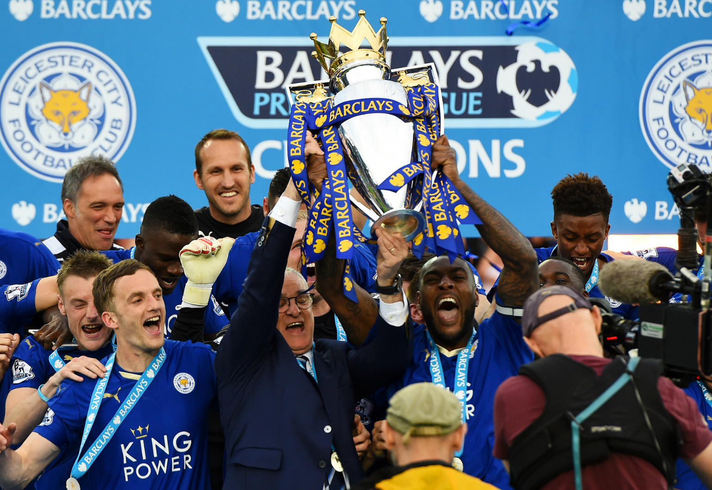

English Premier League
May 18, 2016
Foxes Flying High - Part IV
By Ryan Dean
The Leicester City fairytale comes to its title-clinching, happily-ever-after ending

English Premier League
May 13, 2016
All Hail Big Sam!
By Ryan Dean
Sunderland’s enthralling 3-0 win at home over Everton was enough to condemn Newcastle and Norwich into relegation hell

English Premier League
May 3, 2016
Saints Knocking On Europe’s Door
By Ryan Dean
Southampton run riot over Manchester City at St. Mary’s to keep their European dream alive